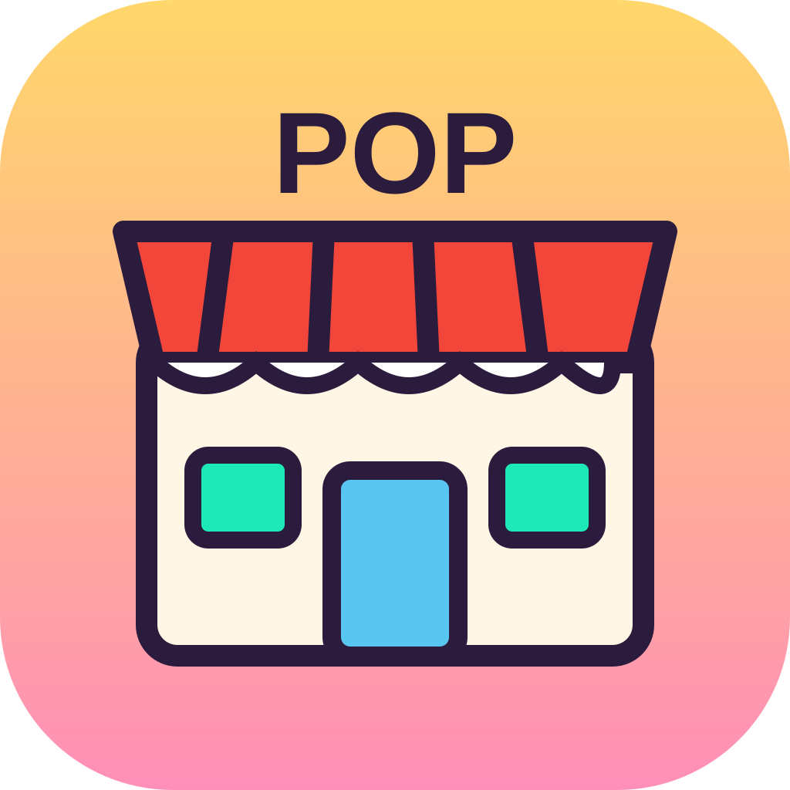

Support
Questions, bug reports or purchase problems? Send us a message and we'll get back to you as soon as we can.
Please include your device model, iOS version and what you were doing when the problem happened.
Frequently asked questions
Is my progress saved?
Yes. The game saves automatically every few seconds and whenever you leave it.
How do offline earnings work?
Once your shop has a cashier, the shop you were last working in keeps earning while you're away: up to 2 hours, or 8 hours with the Pro Pass. When you come back you can collect, or watch an optional ad to double it.
How do co-op shifts work?
Tap Friends Co-op and host a shift to get a code, then your friend enters it to join your shop. Helpers earn a share of the shop's sales while they work. If you own a car, friends can stand on the RIDE spot to hop in and come with you to your other shops.
What do I get with the Pro Pass?
Longer offline earnings (8 hours), free 2× offline collects without ads, a gold PRO badge, and a new exclusive skin every month. If you have the Pro Pass at any point during a month, that month's skin is yours to keep, even if you cancel later.
How do I restore the Pro Pass on a new device?
The Pro Pass is tied to your Apple Account. Open the PRO screen in the game and tap Restore purchases. Manage or cancel the subscription in iOS Settings → your name → Subscriptions.
Can I turn off personalised ads?
Yes. If you declined tracking when asked, ads aren't personalised. You can change this at any time in iOS Settings → Privacy & Security → Tracking.